230 — Workload Identity Federation, IAM Conditions y PAM
Parte: 19 — Google Cloud: arquitectura de datos y operación en producción
Nivel: avanzado · Horas estimadas: 4
Laboratorio: iam · Estado: EXECUTABLE_CORE
🎯 Propósito
Resolver la identidad en Google Cloud, donde el mecanismo tiene una pieza que no existe en las otras dos nubes: las condiciones en las asignaciones, que permiten conceder un permiso solo sobre ciertos recursos y durante cierto tiempo. La clase cubre la federación y las cuentas de servicio sin claves, la suplantación como sustituto de las credenciales guardadas, el ámbito de asignación —que vuelve a ser el error frecuente— y la elevación temporal con aprobación.
📚 Resultados de aprendizaje
Al finalizar podrás:
- Eliminar claves de cuenta de servicio con federación y suplantación.
- Asignar permisos en el ámbito mínimo, con condiciones.
- Distinguir quién actúa de qué identidad se usa, y auditarlo.
- Configurar elevación temporal con aprobación y caducidad.
- Detectar y reducir el alcance de las identidades más amplias.
🧩 Conceptos centrales
| Concepto | Comprensión verificable |
|---|---|
cuenta de servicio |
Identidad de una carga. Puede usarse sin credenciales si se adjunta al recurso o se suplanta. |
clave de cuenta de servicio |
Credencial de larga duración en un fichero. Lo que hay que eliminar. |
suplantación |
Obtener un testigo de otra identidad con permiso para ello, sin credencial guardada. |
federación de identidad de carga |
Confianza en un emisor externo para que sus testigos suplanten una cuenta de servicio. |
condición en la asignación |
Expresión que limita cuándo y sobre qué recursos aplica un permiso. |
identidad de carga del clúster |
Vinculación entre una cuenta de servicio de Kubernetes y una de la nube, sin claves. |
🧠 Modelo mental
Google Cloud combina una jerarquía estricta de recursos con una red global y servicios data-first; proyecto, cuota e IAM forman una unidad operativa.
Aplicado a esta clase, separa siempre cuatro planos: intención (qué necesita el usuario), configuración (qué declaramos), estado observado (qué existe de verdad) y evidencia (cómo sabemos que cumple). Confundirlos produce diseños que se ven correctos en un diagrama pero fallan al operar.
🗺️ Flujo de razonamiento

📖 Desarrollo
1. Eliminar las claves
Una clave de cuenta de servicio es un fichero con una credencial que no caduca. Es lo que hay que eliminar, y aquí hay cuatro formas de no necesitarla.
1 CUENTA DE SERVICIO ADJUNTA — para lo que corre en la nube
la máquina, la función o el servicio lleva una cuenta de
servicio asociada
el código obtiene testigos del servicio de metadatos
→ sin credencial en ningún sitio
y la regla que se olvida
NO usar la cuenta de servicio POR DEFECTO del proyecto
→ tiene permisos amplios y la comparten todos los
recursos del proyecto
→ una cuenta por carga, con sus permisos ley 26
2 IDENTIDAD DE CARGA — para lo que corre en un clúster
una cuenta de servicio de Kubernetes se vincula con una
de la nube
→ el pod obtiene testigos sin claves clase 234
3 FEDERACIÓN — para lo que corre fuera
se declara confianza en un emisor externo (canalización,
otra nube, otro clúster)
sus testigos suplantan una cuenta de servicio
→ mismo mecanismo y mismos errores que en la clase 206
4 SUPLANTACIÓN — para personas y para encadenar
una identidad con permiso obtiene un testigo de otra
→ y el registro guarda QUIÉN suplantó a QUIÉN
Y la política que lo hace efectivo:
prohibir la creación de claves de cuenta de servicio, como
política de organización clase 229
→ y las existentes, inventariadas, migradas y borradas
→ con excepción registrada, dueño y fecha para lo que no se
pueda ley 25
La suplantación, que es la pieza que más cambia el día a día:
UNA PERSONA no necesita permisos de producción
tiene permiso para SUPLANTAR una cuenta de servicio que
sí los tiene
→ obtiene un testigo de corta duración
→ y queda registrado quién lo hizo clase 238
Y LAS CANALIZACIONES ENCADENAN
la identidad federada suplanta una cuenta de despliegue
→ y esa cuenta tiene los permisos, no el testigo externo
→ así se cambian los permisos sin tocar la federación
Y el error que hay que evitar:
dar a muchos el permiso de suplantar una cuenta muy
permisiva
→ es equivalente a darles esos permisos, y más difícil de
ver en un inventario
→ el permiso de suplantar se audita como si fuera el
permiso suplantado
2. Ámbito y condiciones
El error frecuente vuelve a ser el mismo de las clases 206 y 218: el ámbito demasiado amplio. Aquí hay además una herramienta que no existe en las otras dos.
LOS ÁMBITOS, de mayor a menor
organización → todos los proyectos
carpeta → todos los de esa rama
proyecto → todos sus recursos
RECURSO → solo ese
y la costumbre
asignar «Editor» en el proyecto, porque funciona
→ esa identidad puede crear, modificar y borrar casi todo
→ incluida la base de datos clase 218
Las condiciones, que permiten afinar sin crear papeles a medida:
UNA CONDICIÓN es una expresión que limita cuándo aplica el
permiso
POR RECURSO
«solo sobre los almacenes cuyo nombre empiece por
pedidos-»
→ un permiso de proyecto que en la práctica solo toca
lo suyo
POR TIEMPO
«solo hasta el 31 de marzo»
→ el acceso caduca solo ley 25
→ y esto resuelve el problema del acceso temporal sin
infraestructura adicional
POR ETIQUETA
«solo sobre recursos con entorno = desarrollo»
POR TIPO DE RECURSO
«solo sobre conjuntos de datos, no sobre trabajos»
Y el uso que más aporta:
el acceso concedido durante un incidente, con condición de
tiempo
→ nadie tiene que acordarse de quitarlo
→ y el registro de decisión queda en la propia asignación
Y las limitaciones que hay que conocer:
no todos los servicios soportan condiciones por recurso
→ hay que comprobarlo por servicio
las condiciones complican la auditoría: un inventario que
no las lee muestra permisos que en realidad no aplican
→ y al revés: un permiso que parece limitado puede no
estarlo si el servicio ignora la condición
→ comprobar con una prueba negativa, no suponer ley 22
Los papeles, con la disciplina de siempre:
usar el papel PREDEFINIDO más específico que exista
no «Editor» sino «Escritor de objetos de almacenamiento»
y papel PERSONALIZADO cuando ninguno encaje
→ con las acciones justas, y mantenido
y los papeles que se conceden con elevación temporal
Propietario
Administrador de organización
Administrador de facturación
Administrador de seguridad
→ nunca permanentes
3. Elevación temporal y auditoría
La elevación temporal aquí se puede montar de dos formas, y conviene conocer las dos.
CON EL SERVICIO DE GESTIÓN DE ACCESO PRIVILEGIADO
la persona es ELEGIBLE; solicita, se aprueba, caduca
→ con justificación y registro
CON CONDICIONES DE TIEMPO
una asignación con condición de caducidad
→ más simple, sin aprobación integrada
→ útil para accesos acordados fuera de línea
Y EN AMBOS CASOS
activación rápida cuando no requiere aprobación
aprobadores con turnos cuando sí ley 16
y un camino de emergencia sin aprobación, con alerta
inmediata clase 218
Y la prueba obligatoria:
usar el acceso de emergencia y cronometrar
→ en la clase 179 estaba creado, documentado y no
funcionaba ley 22
La auditoría, con lo que hay que saber leer:
LOS REGISTROS DE ACTIVIDAD DE ADMINISTRACIÓN
siempre activos y sin coste
quién creó, modificó o borró qué
LOS REGISTROS DE ACCESO A DATOS
DESACTIVADOS por defecto, salvo unos pocos ley 26
→ quién leyó qué
→ y son los que hacen falta para investigar una fuga
→ y los que más volumen generan: hay que elegir
servicios y coste clase 238
Y EL CAMPO QUE HAY QUE MIRAR
cuando alguien suplanta, el registro guarda la identidad
ORIGINAL y la suplantada
→ sin leer las dos, la auditoría atribuye la acción a la
cuenta de servicio y no a la persona
Medir el alcance, que es lo que ordena el trabajo:
el analizador de políticas responde preguntas concretas
¿quién puede leer este almacén?
¿a qué recursos puede acceder esta identidad?
¿quién puede suplantar esta cuenta de servicio?
→ y esas tres preguntas, ejecutadas periódicamente, son la
medida de alcance de la clase 133
y las recomendaciones de permisos sobrantes
la plataforma sugiere reducir papeles poco usados
→ basadas en uso real de 90 días
→ se evalúan, no se aplican a ciegas clase 227
Y una fuente de alcance que se olvida:
LOS GRUPOS
los permisos se conceden a grupos, y la pertenencia se
gestiona en el directorio
→ alguien añadido a un grupo hereda permisos que nadie
revisó
→ hay que auditar la pertenencia efectiva clase 218
4. Lo que hay que comprobar
Las pruebas negativas de esta clase, que son las mismas de siempre con otras piezas:
☐ crear una clave de cuenta de servicio → debe fallar
☐ suplantar una cuenta desde una identidad sin permiso
→ debe fallar
☐ usar una identidad federada desde otro repositorio
→ debe fallar
☐ acceder a un recurso fuera de la condición → debe fallar
☐ usar un acceso cuya condición de tiempo ha caducado
→ debe fallar
☐ activar un papel privilegiado sin aprobación
→ debe fallar
☐ entrar con el acceso de emergencia → debe
funcionar
☐ comprobar que el registro guarda la identidad original
en una suplantación
☐ y que las tres preguntas de alcance devuelven lo esperado
Y las señales que hay que vigilar:
claves de cuenta de servicio existentes → cero
asignaciones en organización y carpeta → mínimas
identidades con papeles de administración
permisos concedidos y no usados en 90 días
condiciones de tiempo que vencen este mes
usos del acceso de emergencia → alerta
cambios en asignaciones de papeles → auditados
suplantaciones de cuentas privilegiadas → alerta
Y la disciplina de revisión:
trimestral
revisión de accesos por dueño
pertenencia efectiva de grupos
quién puede suplantar cada cuenta privilegiada
y prueba del acceso de emergencia
y la regla que la hace útil
quien no responde a la revisión → se retira el acceso
clase 218
Los errores de traslado, que esta parte vigila especialmente:
✗ «la barrera limita el acceso a los datos»
la política de organización limita qué se configura
→ el acceso a los datos lo decide el permiso
clase 229
✗ «con quitar la clave ya está resuelto»
si la cuenta de servicio conserva permisos amplios, el
problema sigue: solo cambia cómo se obtiene el testigo
✗ «la condición de recurso funciona en todos los servicios»
→ hay que comprobarlo por servicio, con una prueba
Y la lista de comprobación de la clase:
☐ la política prohíbe crear claves de cuenta de servicio
☐ no queda ninguna clave sin excepción registrada
☐ ningún recurso usa la cuenta de servicio por defecto
☐ lo que corre en la nube usa cuenta adjunta
☐ lo que corre fuera usa federación con sujeto exacto
☐ las personas acceden por suplantación, no con permisos
propios de producción
☐ las asignaciones están en el ámbito del recurso
☐ se usan condiciones por recurso y por tiempo donde
aportan
☐ se comprobó por servicio que la condición se respeta
☐ los papeles privilegiados requieren elevación temporal
☐ el acceso de emergencia se ha probado este trimestre
☐ los registros de acceso a datos están activados donde
hacen falta
☐ la auditoría lee la identidad original en las
suplantaciones
☐ se ejecutan las tres preguntas de alcance periódicamente
Y el cierre que enlaza con la clase siguiente: con jerarquía e identidad resueltas, queda la red, que aquí es global y tiene mecanismos de conectividad privada y de balanceo distintos de los de las otras dos nubes. Es la materia de la clase 231.
🔬 Ejemplo trabajado
CloudShop elimina las 341 claves de cuenta de servicio de su organización. Lo que sigue es el inventario, la migración por tipos, y el hallazgo de que quitar las claves no reducía el alcance.
El inventario de claves:
claves de cuenta de servicio 341
con más de 1 año 218
con más de 3 años 94
usadas en los últimos 90 días 127
NUNCA usadas 61
usadas desde fuera de la organización 14 ←
y las 14 usadas desde fuera
9 canalizaciones de un repositorio externo
3 herramientas de proveedores
1 un script en el portátil de un consultor que
terminó su contrato en 2023 ley 25, 20
1 uso desde una dirección que nadie pudo explicar
→ se revocó inmediatamente y se investigó
→ resultó ser un entorno de pruebas de un socio,
no declarado
La migración, por tipos:
tipo de uso claves migrado a
cargas en máquinas 88 cuenta adjunta
cargas en el clúster 64 identidad de carga
canalizaciones internas 41 federación
canalizaciones externas 9 federación
funciones y servicios 52 cuenta adjunta
scripts de personas 43 suplantación
herramientas de terceros 12 9 federadas,
3 con excepción
sin uso 32 borradas
total migrado 341 → 3 con excepción
registrada, dueño y
fecha
duración 4 meses
Y los dos pasos que costaron más:
LAS 43 DE PERSONAS
cada una tenía su clave para «hacer cosas rápido»
y muchas con permisos de proyecto
→ sustituidas por suplantación de cuentas de servicio
concretas
→ y aquí hubo resistencia: suplantar exige un comando más
→ se resolvió con un envoltorio que lo hace transparente
ley 16
LAS 88 DE MÁQUINAS
al mirar cuál usaban, 71 usaban la CUENTA DE SERVICIO POR
DEFECTO del proyecto
→ que tiene permisos amplios y la comparten todos los
recursos ley 26
→ no bastaba quitar la clave: había que crear una cuenta
por carga
El hallazgo: quitar las claves no redujo el alcance.
tras migrar las 341, se midió el alcance con las tres
preguntas del analizador
¿a qué recursos llega cada identidad?
identidad antes después
cuenta por defecto de
pedidos-prod todo el todo el
proyecto proyecto
despliegue organización organización
cuenta de análisis 41 conjuntos 41 conjuntos
→ el alcance NO había cambiado
→ solo había cambiado cómo se obtiene el testigo
y la conclusión
eliminar credenciales resuelve el ROBO de credenciales
no resuelve el ALCANCE
→ son dos trabajos distintos, y el segundo es el que
reduce el daño de un compromiso clases 189, 218
La reducción de alcance, con condiciones:
asignaciones inventariadas 2.410
en organización 18
en carpeta 140
en proyecto 1.870
en recurso 382
las tres peores
1 la cuenta de despliegue con «Editor» en la
organización
alcance: 86 proyectos, todo
corrección: 5 cuentas, una por propósito, con
asignación en el proyecto y CONDICIÓN por prefijo de
nombre de recurso
alcance: entre 4 y 40 recursos cada una
2 el equipo de análisis con «Visor de datos» en la
carpeta de producción
alcance: todos los conjuntos y tablas, incluidos los
que contienen datos personales completos
corrección: asignación por conjunto, y para los
sensibles, seudonimizados clases 236, 239
3 17 personas con «Editor» en proyectos de producción
corrección: suplantación de cuentas concretas, con
elevación temporal para lo privilegiado
Y el uso de las condiciones, con la comprobación que hizo falta:
se usaron condiciones en 61 asignaciones
por prefijo de recurso 38
por tiempo (accesos temporales) 19
por etiqueta de entorno 4
y la prueba negativa, por servicio
se intentó acceder a un recurso FUERA de la condición
en cada uno de los 9 servicios implicados
respetaron la condición 7
NO la respetaron 2 ←
→ dos servicios ignoraban la condición por recurso
→ esas 2 asignaciones se sustituyeron por papeles
personalizados y asignación en el recurso
→ y sin esa prueba, dos permisos habrían parecido
limitados y no lo estaban ley 22
La elevación temporal:
papeles privilegiados retirados como permanentes
Propietario 14 → 0
Administrador de organización 6 → 0
Administrador de facturación 4 → 0
Administrador de seguridad 3 → 0
configurados como elegibles
con aprobación de 2 personas y caducidad de 4 h
emergencia: sin aprobación, con alerta inmediata
primeros tres meses
activaciones 186
de emergencia 2
· 1 incidente real
· 1 porque el aprobador estaba de baja y nadie cubría
→ turno de aprobadores corregido
y la prueba de emergencia
primera ejecución: funcionó, en 90 segundos
segunda (trimestral): la cuenta había perdido un permiso
al reorganizar la carpeta ley 27
→ corregido, y añadida comprobación automática mensual
La auditoría, con el campo que faltaba leer:
al investigar un borrado accidental de una tabla
el registro decía: «cuenta de servicio de análisis borró
la tabla»
→ y el equipo buscó qué carga lo había hecho
al leer el campo de identidad ORIGINAL
una persona había suplantado esa cuenta y ejecutado el
borrado a mano
→ 3 horas de investigación por no leer un campo
corrección
las consultas guardadas incluyen siempre la identidad
original
y una alerta: «suplantación de una cuenta privilegiada»
El resultado:
```text antes después claves de cuenta de servicio 341 3 usadas desde fuera sin explicar 1 0 recursos con cuenta de servicio por defecto 71 0 asignaciones en organización 18 4 asignaciones en carpeta 140 22 alcance de la cuenta de despliegue 86 proyectos 4-40 recursos papeles privilegiados permanentes 27 0 asignaciones con condición 0 59 condiciones que un servicio ignoraba — 0 tiempo de investigación de una acción 3 horas 4 min
**La lección que esta clase deja**: eliminar las trescientas cuarenta y una claves costó cuatro meses y **no redujo el alcance ni un punto**: solo cambió cómo se obtiene el testigo. Reducir el alcance fue un trabajo distinto y posterior, y ahí las condiciones por recurso hicieron el trabajo que en otras nubes exige papeles a medida. Y dos de los nueve servicios **ignoraban la condición**, lo que se descubrió con una prueba negativa y habría dejado dos permisos aparentemente limitados sin estarlo.
## 🧪 Laboratorio guiado
Ejecuta desde la raíz:
```bash
python classes/part-19-gcp-production-architecture/230-workload-identity-federation-iam-conditions-y-pam/lab.py
El laboratorio selecciona el motor de práctica iam y produce
lab_result.json. El escenario, sus comprobaciones y el artefacto esperado corresponden a
esta clase; no requiere credenciales y deja explícito qué debe revalidarse en un sandbox real.
- Lee
exercise.stepsy formula una predicción antes de ejecutar. - Ejecuta la práctica y verifica todos los elementos de
checks. - Provoca el caso de
negative_testy explica la señal observada. - Materializa
gcp-identityenevidence/usando la plantilla indicada. - Para proveedor real, sigue
sandbox.requires, registra costo y ejecutadestroy.
Evidencia esperada
El artefacto principal es una matriz de acceso mínimo con prueba de denegación. Además, la entrega debe incluir el comando ejecutado, la salida estructurada y una conclusión que no exceda lo observado.
🏆 Reto verificable
Construye gcp-identity para el caso CloudShop. Incluye una alternativa descartada,
un supuesto que pueda falsarse, una prueba de fallo y una decisión de rollback.
✅ Criterio de aceptación
- [ ]
lab.pytermina con código 0 y genera JSON válido. - [ ] La entrega conecta al menos tres requisitos con mecanismos verificables.
- [ ] Existe una prueba positiva y una prueba negativa con evidencia.
- [ ] Seguridad, costo y operación aparecen como decisiones, no como anexos.
- [ ] Se declara una limitación y una condición que obligaría a revisar el diseño.
- [ ] Otra persona puede repetir el recorrido sin conocimiento tácito.
⚠️ Errores frecuentes
| Síntoma | Causa probable | Corrección |
|---|---|---|
| Se eliminan las claves y el riesgo apenas baja | Quitar la credencial resuelve el robo, no el alcance de la identidad | Trata reducir alcance como un trabajo aparte: mide qué recursos alcanza cada identidad y baja el ámbito de las asignaciones. |
| Todos los recursos de un proyecto comparten una identidad muy permisiva | Usan la cuenta de servicio por defecto del proyecto | Una cuenta de servicio por carga, con sus permisos, y prohibición de usar la predeterminada. |
| Un permiso parece limitado por una condición y no lo está | El servicio no respeta las condiciones por recurso | Comprueba con una prueba negativa servicio por servicio; donde no se respeten, usa papeles personalizados y asignación en el recurso. |
| La auditoría atribuye una acción a una cuenta de servicio y no a la persona | No se lee el campo de identidad original en las suplantaciones | Incluye siempre la identidad original en las consultas y alerta sobre suplantaciones de cuentas privilegiadas. |
| Dar el permiso de suplantar parece inofensivo y no lo es | Equivale a conceder los permisos de la cuenta suplantada | Audita quién puede suplantar cada cuenta privilegiada como si fuera una asignación directa. |
| El acceso de emergencia funcionó una vez y luego no | Perdió un permiso al reorganizar la jerarquía y nadie lo comprobó | Prueba trimestral del acceso de emergencia y comprobación automática de sus permisos. |
🛡️ Seguridad, ética y costo
Trabaja con cuentas propias o sandboxes autorizados. No publiques secretos, identificadores reales ni datos personales. Antes de crear recursos pagos define presupuesto, etiquetas y comando de destrucción; después verifica que no queden recursos huérfanos. Los ejemplos locales enseñan contratos, pero no certifican cumplimiento ni disponibilidad de producción.
❓ Preguntas de comprobación
- ¿Cuáles son las cuatro formas de no necesitar una clave de cuenta de servicio?
- ¿Qué permiten las condiciones que no permite el ámbito por sí solo?
- ¿Por qué el permiso de suplantar debe auditarse como el permiso suplantado?
- ¿Qué registros están desactivados por defecto y por qué hacen falta?
- ¿Qué campo hay que leer para saber quién ejecutó realmente una acción?
🔗 Referencias
- Google Cloud (2025). Best practices for using service accounts. https://cloud.google.com/iam/docs/best-practices-service-accounts
- Google Cloud (2025). Workload identity federation. https://cloud.google.com/iam/docs/workload-identity-federation
- Google Cloud (2025). IAM conditions overview. https://cloud.google.com/iam/docs/conditions-overview
- Google Cloud (2025). Privileged Access Manager. https://cloud.google.com/iam/docs/pam-overview
- Google Cloud (2025). Policy Analyzer and IAM recommender. https://cloud.google.com/policy-intelligence/docs/policy-analyzer-overview
- Documentación oficial vigente del servicio implementado; registra URL y fecha de consulta.
📥 Descargar: Parte 19 en PDF · Recorrido de Google Cloud en PDF · Manual integral